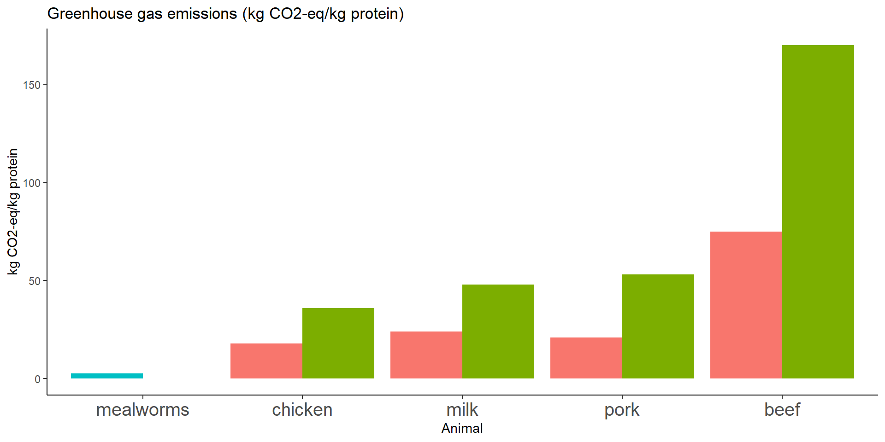
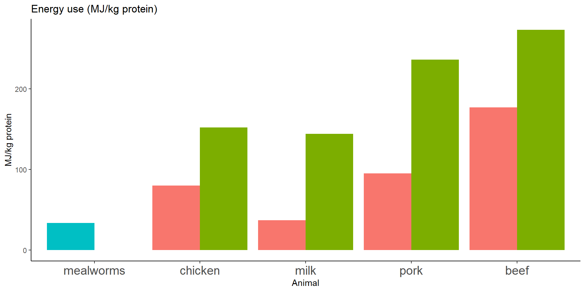

Insects as food in Aotearoa New Zealand
Neil Birrell
Background
Population Growth
- By 2050, global population will increase to 9.7 billion (U.N., 2019)
- Estimated increase in protein consumption between 32 - 43% (Henchion et al., 2017)
Insects as Food
- FAO suggests insect protein be used to meet demand
- Many perceived advantages over traditional livestock
Green House Gas Emissions
Land Use
Energy Use

Insects as Food
- Several hundred million (van Huis et al., 2013)
>1500 species of insects (van Itterbeeck & Pelozuelo, 2022)
Overview of the thesis

Chapter 2: A review of insects as food in Aotearoa New Zealand
Edible insect catalogue
- Identified species with traditional and contemporary uses
- Analysed social and legislative landscape
- recorded companies marketing edible insect products
Findings
- Identified 21 insects species
- at least 10 endemic/native species:
- Prionoplus reticularis, huhu grub
- Aenetus virescens, pūriri moth
- Pyronota festiva, mānuka beetle
- Costelytra zealandica / Odontria zealandica, tūtaeruru/grass grub
- Locusta migratoria, migratory locust
- Teleogryllus commodus, black field cricket
- Agrius convolvuli kumara moth/hīhue
- Kikihia muta, kihikihi kai
- Tortricidae family - species unknown tīkopa/leaf rollers
- Archichauliodes diversus, puene
Findings
- In last 10 years:
- Eight companies have sold edible insects/insect-based products
- Only two are still trading/marketing products
Findings
Findings
Chapter 3: The use, perception, and existing knowledge of insects as food in Aotearoa New Zealand
Knowledge and use of insects as food
- 620 participants
- 59.2% had eaten insects
- 76.0% participants were likely to eat in future
- 80.3% people could name one or more species
- 48.1% people named crickets
- 53.7% people named the huhu grub
Factors which influence likelihood of eating insects (logistic regression)
- Factors influencing future likelihood:
- Prior experience
- Existing Knowledge (# of species named)
- Food neophobia score
Unconscious Bias
Unconscious Bias
Words associated with cricket flour
- Positive
- “curious”
- “interesting”
- Environmentally friendly
- “green”
- “environmental”
- “alternative”
- Nutritious
- “high protein”
- “gluten free”
- Culinary applications
- “bread”
- “pancake”
- “tortilla”
Words associated with huhu grubs
- Ecology:
- “native”
- “bush”
- “beetle”
- Cultural significance:
- “Māori”
- Flavour profile and texture:
- “peanut butter”
- “gooey”
- “creamy”
- “slimy”
Huhu beetle is well known
- Huhu Beetle (Prionoplus reticularis) is widely recognised in Aotearoa
- Research has tended to focus on the huhu grub as a pest of timber industry
- There is a gap in knowledge of the biology of huhu beetles
Chapter 4: The metabolomic fingerprint of an edible insect species, P. reticularis, along a latitudinal gradient
Can we use the metabolomic profile of an insect to determine which geographic location it came from?
Findings (PERMANOVA)
Methyl chloroformate (MCF):
- Location, larval weight, log and log temperature were all significant.
- Location only explained 12.3% of the variation in the model
Trimethylsilyl (TMS):
- Only location was significant.
- Location explained 31.1% of the variation in the model
Ramdom Forest Classification Model
- TMS had the highest accuracy, predicting the correct location of a sample 72.2% of the time
- MCF had a lower accuracy of 68.1%
- The field site of Kaingaroa had the highest error rate which impacted overall accuracy
Metabolite abundance - MCF
Chapter 5: The static allometry of traits associated with fitness in P. reticularis
Exploring the mating system of an edible insect species
- Measured traits important in scramble competition mating systems
- body size
- wing size
- antennal size
- locomotory performance
Flight mill
Findings
Sexual dimorphism
- Male antennae were significantly larger than female antennae
- Females were significantly larger in all other traits.
Allometry
| Trait | Male | Female |
|---|---|---|
| Antennal length | -ve | -ve |
| F9 length | 0 | 0 |
| Wing length | -ve | 0 |
| Wing area | -ve | 0 |
| Wing loading | 0 | -ve |
Chapter 6: The antennal ultrastructure of P. reticularis
Antennal Ultrastructure Analysis
- Scanning electron microscopy
- Description of unique sensilla
- Further evidence of sexual dimorphism
Sexual Dimorphism in the antennae
Sensilla
Sensilla
Conclusion
- There is potential for an edible insect industry in New Zealand
- However this needs to be tempered by previous company failures
- Huhu grubs are a possible candidate
- Thesis as starting point for the careful development of edible insects in NZ
Acknowledgements

Questions